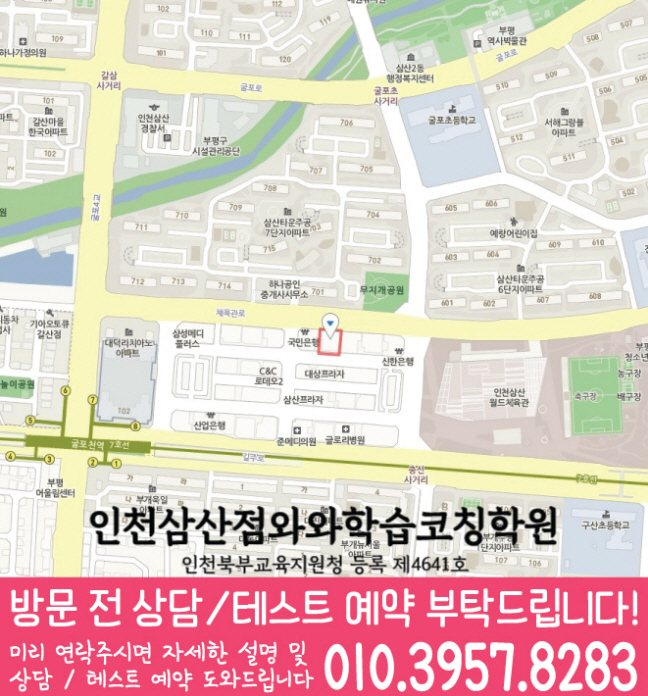

국어 수업 가능 학년
초1 · 초2 · 초3 · 초4 · 초5 · 초6 · 중1 · 중2 · 중3 · 고1 · 고2 · 고3
ACADEMIC SUPPORT LOCAL GUIDE
인천 갈산동 보습학원은 질문을 받으면 핵심을 말할 수 있지만 선행보다 누적 복습이 필요한 학생의 진단과 학교 진도·과제·오답 관리 기준을 안내합니다.
30초 핵심 안내
인천 갈산동에서 보습학원을 찾는 학부모에게 먼저 드릴 답은, 성적 상승 약속보다 진단 근거와 관리 절차가 분명한지를 보라는 것입니다. 이번 페이지의 학생 유형은 질문을 받으면 핵심을 말할 수 있지만 선행보다 누적 복습이 필요한 학생이며, 이 경우 새 진도 전에 이전 단원의 필수 문제를 다시 풀어 빈틈을 먼저 줄이는 누적 복습이 수업 계획에 실제로 들어가는지 확인해야 합니다. 주간학습점검 안내와 수업 장소 인천 부평구 체육관로 32 하이존빌딩 8층 802도 같은 기준으로 기록해 비교하면 선택 오류를 줄일 수 있습니다.
인천 갈산동은 수업 가능 생활권 기준입니다. 실제 방문 센터는 와와학습코칭센터 인천삼산점이며, 주소와 등록 정보는 아래 센터 기준 정보에서 확인할 수 있습니다.
초1 · 초2 · 초3 · 초4 · 초5 · 초6 · 중1 · 중2 · 중3 · 고1 · 고2 · 고3
초1 · 초2 · 초3 · 초4 · 초5 · 초6 · 중1 · 중2 · 중3 · 고1 · 고2 · 고3
초1 · 초2 · 초3 · 초4 · 초5 · 초6 · 중1 · 중2 · 중3 · 고1 · 고2 · 고3


인천 부평구 체육관로 32 하이존 8층 (삼산체육관에서 도보 5분) or 굴포천역 도보 5분 or 삼산타운 7단지 정문 맞은편
센터 기준 정보
센터명·주소·등록 정보와 교습비 확인 경로를 상담 전에 살펴볼 수 있도록 정리했습니다.
인천 부평구 인천 갈산동 상담 기준
인천 부평구 체육관로 32 하이존빌딩 8층 802
인천북부교육지원청 등록 제4641호
실제 수업 가능 시간은 학년·과목별 일정에 따라 상담에서 확인합니다.
동네명은 수업 가능 지역을 찾기 위한 안내 기준입니다.
굴포초 · 진산초 · 영선초
진산중 · 삼산중 · 구산중
영선고 · 삼산고
센터명·주소·등록번호·가능 학년·학교 참고 정보는 제공된 센터 자료를 기준으로 정리했으며, 실제 수업 범위와 일정은 상담에서 다시 확인합니다.
지역별 학습 안내
학생의 과목별 학습 상황과 상담 전에 확인할 기준을 여섯 가지 주제로 나누어 정리했습니다.
제공 자료에서 인천 갈산동 수업학교로 굴포초, 진산초 등이 안내되어 있습니다. 인천 갈산동 학부모는 이 명칭만으로 특정 시험 일정이나 범위를 가정하지 말고 학생이 실제로 받은 안내 자료를 출발점으로 삼아야 합니다. 인천 부평구 인천 갈산동의 현재 학년 진도, 수행 과제, 이전 시험 오답과 남은 기간을 한 표에 넣으면 학교 대비와 누적 복습의 비중을 조정하기 쉽습니다. 인천 갈산동 페이지는 제공된 수업학교 외의 이름을 추가하지 않으며 다른 학교의 수업 가능 여부는 상담에서 확인하도록 안내합니다.
“주간학습점검”의 목표는 학생을 혼자 두는 것이 아니라 필요한 도움을 점차 줄여 스스로 계획하고 확인하게 만드는 것입니다. 인천 갈산동에서 주간학습점검 조건을 기록할 때는 처음에는 교사와 계획을 세우고, 이후 학생이 분량과 우선순위를 제안하며, 마지막에는 실행 기록을 근거로 수정하도록 단계가 나뉘는지 확인하십시오. 인천 갈산동에서 주간학습점검을 확인할 때는 누적 복습이 먼저 필요한 학생에게는 보호자 재촉을 대신하는 체크 구조와 질문할 수 있는 통로가 함께 필요합니다. 인천 갈산동 학부모는 주간학습점검을 자율성이라는 말로 포장하지 않고 실제 점검 횟수와 피드백 내용을 설명하는지를 보아야 합니다.
인천 갈산동에서 가정한 핵심 학생 유형은 질문을 받으면 핵심을 말할 수 있지만 선행보다 누적 복습이 필요한 학생입니다. 인천 갈산동에서는 이 경우 의지나 집중력만 탓하기 전에 문제를 읽고, 개념을 떠올리고, 풀이를 시작하고, 채점 뒤 다시 보는 네 단계를 각각 확인해야 합니다. 인천 부평구 인천 갈산동 학생에게 새 진도 전에 이전 단원의 필수 문제를 다시 풀어 빈틈을 먼저 줄이는 누적 복습이 반복될 때 학습이 막히는 지점을 더 정확히 줄일 수 있습니다. 인천 갈산동의 현재 학년 학교 진도와 누적 빈틈을 따로 표시하면 선행이 필요한지 복습이 필요한지도 구분하기 쉬워집니다.
선행, 복습, 시험 준비를 모두 많이 하는 것이 인천 부평구 인천 갈산동 학생에게 항상 좋은 계획은 아닙니다. 인천 갈산동에서 누적 복습이 먼저 필요한 학생은 먼저 새 진도 전에 이전 단원의 필수 문제를 다시 풀어 빈틈을 먼저 줄이는 누적 복습을 통해 현재 학년의 필수 내용을 안정시킨 뒤 다음 단계를 정하는 편이 현실적입니다. 인천 갈산동 주간 계획은 학교 진도 대응, 누적 빈틈 보완, 평가 대비를 다른 색이나 칸으로 구분해 어느 목적의 공부인지 보이게 해야 합니다. 인천 부평구 인천 갈산동에서는 시험이 가까워져 범위 학습이 늘더라도 이전 오답을 완전히 버리지 않고 짧은 확인을 유지하는 것이 좋습니다.
검색 기준 지역은 인천 부평구 인천 갈산동이지만 제공된 학원 주소는 인천 부평구 체육관로 32 하이존빌딩 8층 802이므로 동네 키워드만으로 거리를 판단해서는 안 됩니다. 같은 인천 갈산동 안에서도 학교, 집, 보호자 이동 경로가 다르면 가능한 수업 시간이 달라집니다. 인천 갈산동 학생의 귀가 시간을 기준으로 가장 여유로운 날이 아니라 가장 일정이 빡빡한 날을 기준으로 출발 시각, 수업 종료, 귀가까지 계산하는 것이 현실적입니다. 주간학습점검을 포함한 부가 조건도 실제 동선과 맞지 않으면 장기 선택의 우선순위가 낮아질 수 있습니다.
인천 갈산동 보습학원 상담을 예약하기 전에는 최근 평가 자료, 현재 교재, 학교 일정표와 가능한 등원 요일을 준비하면 답이 구체적이 됩니다. 인천 갈산동의 실제 생활표를 놓고 보면 첫째 진단 방식, 둘째 수업 인원과 개별 확인 범위, 셋째 과제·오답 처리, 넷째 결석 보강, 다섯째 피드백 주기, 여섯째 비용·변경·환불 기준을 같은 순서로 묻는 것이 좋습니다. 주간학습점검 설명은 구두 약속으로 끝내지 말고 적용 대상, 시작 시점, 예외 상황과 확인 방법을 기록해 두십시오. 인천 갈산동 학부모가 답변을 기록할 때는 상담 당일 성적 상승 폭이나 입시 결과를 단정하는 표현보다 현재 자료를 근거로 조정 가능한 계획을 제시하는지를 선택 기준으로 삼으십시오.
FAQ
인천 갈산동 상담에서는 교사가 계획을 대신하는 단계에서 학생이 스스로 제안·수정하는 단계로 어떻게 옮겨 가는지와 점검 빈도를 확인해야 합니다.
질문을 받으면 핵심을 말할 수 있지만 선행보다 누적 복습이 필요한 학생이라면 현재 학년의 빈틈을 나누어 보고 새 진도 전에 이전 단원의 필수 문제를 다시 풀어 빈틈을 먼저 줄이는 누적 복습을 실제 수업과 과제에 연결하는지를 우선 확인하는 편이 좋습니다.
인천 갈산동 페이지에 제공된 주소는 인천 부평구 체육관로 32 하이존빌딩 8층 802입니다. 인천 갈산동 등원 계획은 출발 장소와 요일별 일정, 수업이 끝난 뒤 귀가 시간을 각각 계산하고 필요한 편의 서비스가 실제 제공되는지도 확인해야 합니다.
인천 갈산동 페이지에 제공된 학교 정보는 굴포초, 진산초입니다. 인천 갈산동에서는 학교 이름만으로 진도와 일정을 예상하지 말고 학생의 실제 범위표·교재를 기준으로 계획을 조정하며, 목록에 없는 학교는 수업 가능 여부를 따로 확인해야 합니다.
학생의 현재 상태와 평가 난도, 확보한 학습 시간이 모두 달라 인천 갈산동 상담에서 향상 폭을 사전에 보장하기는 어렵습니다. 인천 갈산동 학생은 새 진도 전에 이전 단원을 스스로 점검하는 빈도 같은 과정 지표와 학교 평가를 함께 추적하며 계획을 조정하는 설명이 더 현실적입니다.
상담 상황 예시
인천 갈산동 상담 전에 재학 학교 자료와 최근 오답을 함께 준비하라는 안내가 도움이 됐습니다. 아직 결과를 단정할 수는 없지만, 인천 갈산동에서 주간학습점검과 과제·피드백 기준을 같은 질문으로 비교하니 무엇을 확인해야 하는지가 명확했습니다.
인천 갈산동에서 여러 보습학원을 비교하면서 교재명만 들었을 때보다 수업 전 진단, 혼자 풀이, 오답 재확인 순서를 들었을 때 차이를 알기 쉬웠습니다. 인천 갈산동에서 아이에게는 새 진도 전에 이전 단원의 필수 문제를 다시 풀어 빈틈을 먼저 줄이는 누적 복습이 필요하다는 설명을 듣고, 집에서는 과도하게 개입하기보다 실행 여부만 확인할 수 있었습니다.
인천 부평구 인천 갈산동에서 학원을 비교하는 상황을 가정한 예시 후기입니다. 이 문안은 인천 갈산동 관련 예시이며 실제 수강생의 성적이나 입시 결과를 주장하지 않습니다.